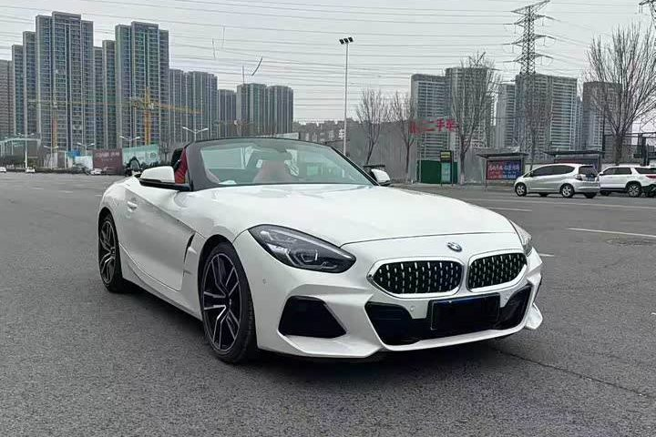

СПРАВОЧНИК МОДЕЛЕЙ
BMW Z4
BMW Z4 — модель для индивидуального подбора. Версию и возможность поставки уточняйте.

Пример из объявления агентства. Год и версия могут отличаться.
Объявление, из которого взято фото ↗Расчёт по запросу
Стоимость после выбора версии и проверки маршрута.
- Кузов
- Кабриолет
- Год
- Выбирается при подборе
- Пробег
- Выбирается при подборе
- Двигатель
- Выбирается при подборе
- Статус
- Возможность ввоза требует проверки
Справочная модель, не конкретное предложение. Региональные версии отличаются; наличие и возможность ввоза проверяются отдельно.
Модель на сайте производителя ↗Позвонить Дмитрию ↗Канал агентства ↗Открыть интерактивную карточку ↗